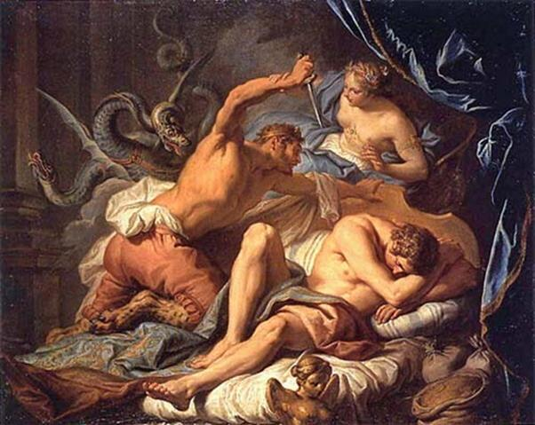

Lại nói chuyện Déméter tôi chú bé Démophon trong lò lửa. Có chuyện kể rằng, khi Déméter vừa cầm chú bé Démophon đưa vào lò lửa thì Métanira trông thấy, sợ quá, thét to lên một tiếng. Tiếng thét làm Déméter giật mình, buông rơi đứa bé xuống lửa khiến cho nó qua đời. Nhưng lại có người bác chuyện này, cho rằng chẳng đáng tin, và họ kể rằng chẳng có đứa bé nào bị chết hay bị tôi hỏng cả. Nữ thần Déméter chỉ tôi luyện cho một đứa con của Métanira là Triptolème, anh ruột của Démophon. Thôi thì chuyện xưa mỗi người kể mỗi khác, ta chẳng biết tin vào ai. Nhưng có điều có thể tin chắc được là nữ thần Déméter, để đền đáp lại tấm lòng hiếu khách và nhân hậu của vợ chồng nhà này, đã ban cho một đứa con của họ tên là Triptolème được siêu thoát hết chất người trần tục đoản mệnh để đứng vào hàng ngũ các vị thần bất tử. Nàng lại còn truyền dạy nghề nông cho Triptolème, dạy chàng từ cách cày đất, gieo hạt, chăm bón cho đến việc gặt hái, đập, xay, giã, sàng, sẩy. Nàng lại còn ban cho chàng trai, con của nhà vua Céléos ấy, những hạt lúa giống. Chưa hết, để cho việc gieo hạt được nhanh chóng, nàng lại còn ban cho Triptolème một cỗ xe thần do những con rồng có cánh kéo để chàng bay trên những cánh đồng rộng mênh mông, gieo hạt. Với cỗ xe này Triptolème có thể đi khắp nơi trên trái đất để gieo hạt, để truyền dạy nghề nông đặng làm cho loài người ấm no, sung sướng. Chàng đã cày đất đến ba lần trước khi gieo hạt, vì thế mới có tên gọi là Triptolème.
Sự nghiệp truyền dạy nghề nông của Triptolème không phải chỉ gặp thuận lợi. Theo lệnh của Déméter, Triptolème đến xứ Scythe để truyền nghề. Nhà vua Lyncos bề ngoài đón tiếp Triptolème rất niềm nở nhưng trong bụng chứa đầy mưu đồ xấu xa. Lyncos muốn giành lấy vinh quang là thủy tổ của nghề nông nên rắp tâm ám hại Triptolème trong khi chàng đang ngủ. Nhưng nữ thần Déméter luôn luôn ở bên cạnh người đồ đệ yêu dấu của mình. Mọi ý nghĩ đen tối và hành động ám muội của tên vua xấu xa này đều không lọt qua mắt nữ thần. Khi Lyncos, đêm hôm đó lừa lúc Triptolème ngủ say, lẻn vào phòng vung kiếm lên định kết liễu đời Triptolème thì nữ thần Déméter lập tức bằng những quyền lực và pháp thuật của mình biến ngay Lyncos thành con mèo rừng. Thanh kiếm rơi ngay xuống đất. Và con mèo chỉ kịp kêu lên một tiếng sợ hãi rồi cong đuôi chạy biến vào rừng.

Lyncos định hại Triptolème
Triptolème tiếp tục sự nghiệp của mình từ xứ sở này sang xứ sở khác. Danh tiếng và vinh quang của chàng vang dội đến tận trời xanh. Trở về Éleusis, chàng được vua cha truyền ngôi cho. Không quên công ơn của vị nữ thần vĩ đại, chàng đặt ra những nghi lễ và tập tục thờ cúng nữ thần, những hình thức diễn xuất-tôn giáo thầm kín mà người xưa gọi là: Mystère d’Éleusis.
Nghi lễ Mystère d’Éleusis hàng năm được tổ chức, được mở rất trọng thể. Người xưa chia nghi lễ làm hai loại: Mystère nhỏ và Mystère lớn. Mystère nhỏ mở vào tháng ba ở Agra gần Athènes, trên bờ sông Ilissos, đóng vai trò mở đầu, chuẩn bị cho Mystère lớn. Mystère lớn tổ chức ở Éleusis, một địa điểm ở Đông Bắc thành Athènes trên vùng đồng bằng Thria. Hội lễ mở vào cuối tháng chín, kéo dài tới 10 ngày. Người ta cử hành nhiều đám rước từ Athènes tới Éleusis rước các đồ vật thiêng liêng, làm lễ tẩy trần cho mọi người để chuẩn bị cho ngày long trọng nhất (ngày 21 tháng 9). Nhiều bàn thờ để cầu cúng được dựng lên trong những hang động thiêng liêng, một lễ trình diễn lại huyền thoại Déméter và Perséphone nhằm mục đích khắc sâu vào tâm trí những tín đồ công ơn của vị nữ thần Lúa mì, khẳng định tính chất cao siêu và vĩnh hằng của thế giới thần thánh. Viên tư tế mà tiếng Hy Lạp xưa gọi là Hiérophante đứng ra làm lễ và trình bày cho mọi người xem những đồ vật thờ cúng thiêng liêng. Đêm hôm sau những người hành lễ nhưng chỉ là tín đồ cũ, dự tiệc, được uống một thứ rượu thiêng, và sau khi xem lễ trình diễn đám cưới thiêng liêng của Zeus và Déméter mới được dự lễ ngắm (epopteia) bông lúa mì. Hôm sau lễ kết thúc bằng tập tục rảy rượu thiêng từ Đông sang Tây. Những nghi lễ cử hành trong thời gian hành lễ đòi hỏi các tín đồ phải giữ bí mật tuyệt đối. Mọi hành động làm tiết lộ tính chất thiêng liêng của những nghi lễ diễn xuất tôn giáo thầm kín này - Mystère này - bị trừng phạt như đã phạm trọng tội phản bội. Sau này Mystère d’Éleusis không chỉ thờ cúng Déméter, Perséphone, Triptolème mà còn thờ cúng cả Dionysos.
Tục thờ cúng hai vị nữ thần của nghề nông, Déméter và Perséphone đã từng có từ thời kỳ xa xưa - thời kỳ tiền Hy Lạp. Lúc đầu nó chỉ mang một ý nghĩa đơn giản: thể hiện khát vọng của con người, ước mơ của con người đối với mùa màng, mùa lúa mì. Dần dà với sự phát triển của lịch sử xã hội, tục thờ cúng đó mang những ý nghĩa phức tạp hơn, sâu rộng hơn. Người Hy Lạp của thời kỳ cổ điển đã suy ngẫm với một cảm hứng khái quát phảng phất ít nhiều hương vị của triết lý tự nhiên-nhân bản về quá trình hình thành của cây lúa.
Hạt lúa mì gieo xuống đất, được đất đen ấp ủ, nuôi dưỡng. Đất đen đã đem cuộc sống của mình ra để chăm nom, “bú mớm” cho cuộc sống của hạt lúa mì. Con người cũng vậy, con người sống trên mặt đất, được đất đen đem cuộc sống của mình ra nuôi dưỡng, hơn nữa lại nuôi con người bằng cuộc sống của hạt lúa mì. Con người cứ thế sống, sinh sôi, nảy nở, con đàn cháu đống cho đến khi con người từ giã cõi đời, con người trở về với đất, sống trong lòng đất, biến thành đất. Từ đây con người đem cuộc sống của mình nuôi dưỡng lại cỏ cây. Cây lúa mì, kẻ đã nuôi dưỡng loài người chúng ta, đến lần được loài người chúng ta nuôi dưỡng lại. Và cứ như vậy sinh sinh, hóa hóa tuần hoàn. Cái chết đối với con người là sự tiếp tục một cuộc sống khác, một cuộc sống vẫn có ích cho đồng loại, một cuộc sống trả ơn trả nghĩa lại, đền bù lại công lao của cây lúa mì cũng như các thứ cây cỏ hoa lá khác. Như vậy cái chết chẳng có gì đáng sợ, đáng coi là chuyện khủng khiếp, thảm họa. Tạo hóa là sáng tạo và biến hóa, biến hóa và sáng tạo mọi thứ cho cuộc sống vĩnh hằng, bất diệt. Nhìn hạt lúa mì gieo xuống lòng đất hứa hẹn một mùa gặt mới, con người cảm nhận thấy sự vĩnh hằng của đời sống, cuộc sống trong đó có cuộc sống của mình.
Nhưng từ khát vọng này, khát vọng về sự vĩnh hằng, bất tử của con người - của giống loài nói chung như là sự kế tiếp của các thế hệ - đã chuyển biến thành khát vọng về sự vĩnh hằng, bất tử của con người-cá nhân. Chế độ chiếm hữu nô lệ ở Athènes trong thế kỷ V TCN đã phát triển mạnh mẽ, đạt được những thành tựu lớn trong lĩnh vực kinh tế. Tiểu công nghiệp, thủ công nghiệp, thương nghiệp phát triển. Trong quan hệ của một nền kinh tế tư hữu, sự phát triển đó đã phân hóa cư dân thành những người giàu và người nghèo, làm lỏng lẻo hoặc tan rã những mối liên hệ chặt chẽ của truyền thống và gia đình thị tộc phụ quyền. Cá nhân con người tách ra khỏi những quan hệ cộng đồng nguyên thủy vốn xưa kia là chất keo gắn bó con người lại với nhau. Trên cơ sở của sự biến đổi này trong xã hội đã nảy sinh ra sự biến đổi về khát vọng, từ tập thể sang cá nhân như đã nói trên.
Mystère d’Éleusis từ đây bắt đầu truyền giảng, hứa hẹn với các tín đồ về một cuộc sống hạnh phúc, vĩnh hằng đang chờ đợi cá nhân dưới âm phủ. Cũng từ đây tập tục thờ cúng các vị nữ thần nông nghiệp bắt đầu đi chệch hướng. Và sự chệch hướng càng xa hơn nữa: các nghi lễ phức tạp và nhiều điều cấm đoán ra đời. Xưa kia trong ngày hành lễ Mystère d’Éleusis, phụ nữ nô lệ và những người nước ngoài ngụ cư đều được quyền tham dự. Hơn nữa ngày lễ hướng tới những người nghèo khổ nhất trong xã hội: phụ nữ nô lệ, ban cho họ những niềm an ủi coi đó như một sự đền bù cho số phận thiệt thòi của họ, giống như nữ thần Déméter đã ban phúc lợi cho tất cả mọi người. Nhưng giờ đây khi xã hội đã có ý thức về sự phân biệt địa vị, đẳng cấp thì truyền thống dân chủ, bình đẳng của thời xưa phải “địa vị hóa”, “đẳng cấp hóa” theo xã hội để phản ánh cái thực tại xã hội và củng cố ý thức xã hội.
Những cuộc khai quật khảo cổ học ở Éleusis thế kỷ XIX phát hiện cho ta thấy nhiều di tích của trung tâm tôn giáo này, đặc biệt có một căn phòng lớn tên gọi là Télestérion xây dựng trong một ngọn núi đá có chiều dài là 54,15 mét, chiều rộng là 51,80 mét. Bốn chung quanh là tám bậc ngồi có thể chứa được 3.000 người. Tại đây có Bức phù điêu lớn Éleusis, một kiệt tác mà các nhà nghiên cứu phỏng đoán được xây dựng dưới sự chỉ đạo của Phidias, ra đời trước những bức tường ở điện Parthénon. Khu vực đền thờ này bị hoàng đế La Mã Théodose I (347-395) ra lệnh đóng cửa, cấm chỉ mọi tập tục nghi lễ truyền thống. Năm 396, toàn bộ khu vực đền, điện Éleusis bị những tộc người dã man xâm nhập, phá hủy.